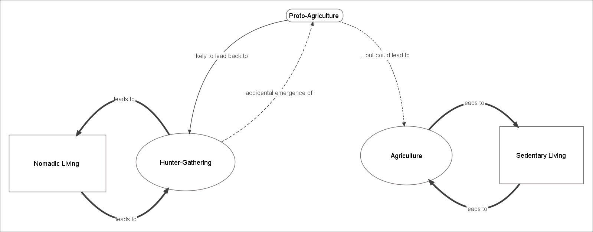
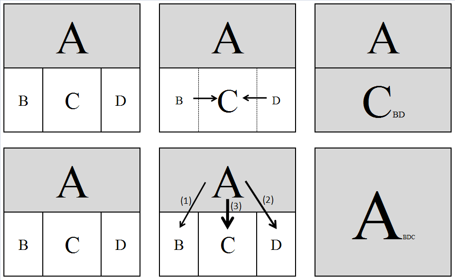

Chapter 3: Empires, Elites and States: Some Theories of Very Large Scale Social Phenomena
Source: Pages 40–58 of MintonThesis.pdf (September 2009). Text extracted from PDF; figures extracted directly as images.
3 Empires, Elites and States: Some Theories of Very Large Scale Social Phenomena 3.1 Introduction Within the previous chapter, I considered biological organisms in order both to understand some of the biological processes that underlie everyday experiences; and also to provide a conceptual device – organism-as-abstract-machine – that one may attempt to apply to understanding other phenomena. This chapter will draw more from the latter aspect of the previous chapter than the former. The suggestion will be made that very-large scale social structures share a number of striking similarities with verysmall scale biological structures: these include a lack of prior intentional design; a (tautologically-defined) homeostatic purpose; and a co-emergence of functional specialisation and hierarchy with structure complexity. This does not mean, however, that the contents of this chapter will not speak to, and attempt to explain aspects of, everyday lived experiences as chapter two did. Instead, one may argue that the results of the processes described here have shaped our experiences to an overwhelming extent. Furthermore, the processes described in this chapter, like those described in the previous chapters, are prerequisites for the existence of the kinds of social, economic and political issues discussed in later chapters. As with the previous chapter, in order to maintain consistency in terminology and focus, the chapter will be based around a single account; in this case, Jared Diamond‟s account of the emergence and dominance of complex societies over the last 10,000 years.28 The account offered within this chapter will attempt to remain close to the original source, but will: a) more explicitly suggest the potential application of an „evolutionary‟ mode of thinking to understanding the processes described; b) highlight the idea that modern societies are variations of, rather than alternatives to, earlier societies, and may be thought of as part of an unbroken continuation of predecessors; and c) emphasise the holistic coherence, the extent to which the whole should be considered qualitatively different from the sum of its parts, of the social structures described.
28
Diamond, J. (1998). Guns, Germs and Steel: A short history of everybody for the last 13,000 years. London, Vintage.; in particular pp. 265-292, a chapter called ‘From Egalitarianism to Kleptocracy’, which is based on seventeen source materials written, primarily, by anthropologists in the 1960s and 1970s.
3.2 Evolution and Social Processes The psychologist and social science methodologist Donald Campbell suggests that, when applying evolutionary thinking to cultural phenomena, the terms „blind variation‟ and „selective retention‟ be used instead of „natural selection‟. The reasons for this are two-fold: firstly, because these terms describe the two basic mechanisms that together constitute a natural selective process (but that may also exist separately); and secondly, to emphasise – by using the word „blind‟ – that variation need not be completely random in order for the process to operate.29 In adopting this terminology, it becomes clearer that valid applications of the concept are those where one can identify the existence of, and interplay between, these two mechanisms, and so one is not restricted to those instantiated in similar materials or operating at similar scales as those in which they were originally identified and applied. Another useful concept with which Campbell is credited is that of „downward causation‟. As Campbell described it: Where natural selection operates through life and death at a higher level of organization, the laws of the higher level selective system determine in part the distribution of lower level events and substances. Description of an intermediate-level phenomenon is not completed by describing its possibility and implementation in lower level terms. Its presence, prevalence, or distribution […] will often require reference to laws at a higher level of organization as well. […] [A]ll processes at the lower levels of a hierarchy are restrained by, and act in conformity to, the laws of the higher levels.30 As the following discussion will show, the survival of the individual has consistently and extensively depended on the qualities of the social structure within which he or she is born and embedded.
3.3 Food, Social Structure, and Societal Complexity The most basic version of the argument presented in this chapter is indicated in Figure 3.1. On both the left and right sides of the figure, a form of social structure (rectangle) is linked reciprocally to a means of acquiring food (oval). The social structure „Nomadic 29
See Campbell, D. T. (1969). “Variation and Selective Retention in Socio-Cultural Evolution.” General Systems 14: 69-&. 30 P. 4 of Campbell, D. T. (1990). Levels of Organization, Downward Causation, and the Selection-Theory Approach to Evolutionary Epistemology. Theories of the Evolution of Knowing. E. Tobach. Hillsdale, NJ, Lawrence Erlbaum: 1-17. Of course, the idea - that in order to understand the part, one must understand the whole – is not new, and is often associated with, amongst others, Emile Durkheim.
Living‟ is paired with the „Hunter-Gathering‟ means of provisioning; and the social structure „Sedentary living‟ is paired with „agriculture‟ as a means of provisioning.

Figure 3.1 Two ‘modes of living’. Rectangles denote social structures; ovals denote means of acquiring food. Thickness of lines indicates degree of association. Arrows indicate causality. Note that causal path exists linking hunter-gathering to agriculture, but not agriculture to hunter-gathering
The reasons for these two particular types of pairing are relatively simple: „huntergathering‟ requires moving from place to place, as hunting and gathering in a single area would lead to a degradation in its feeding capacity; acquiring food in this way thus needs a willingness to relocate, frequently, to more hospitable places. Agriculture, by contrast, requires a long period of intensive cultivation, development, and maintenance of an environment in order for it to produce food; this requires staying close to the areas being cultivated, in order to be able to tend to it sufficiently. The item labelled „Proto-Agriculture‟ provides a link between the former and the latter means of provisioning. „Proto-Agriculture‟, to use Campbell‟s term, may be thought of as a „blind variation‟ of traditional hunter-gathering practices. Diamond suggests humans, like other animals, may have accidentally cultivated and domesticated a number of species as an incidental by-product of finding and eating suitable foods: Countless […] plants have fruits adapted to being eaten and dispersed by particular species of animals. Just as strawberries are adapted to birds, so acorns are adapted to squirrels, mangoes to bats, and some sedges to ants. That fulfils part of our definition of plant domestication, as the genetic modification of an ancestral plant in ways that make it more useful to consumers. But no one would serious describe this evolutionary process as domestication, because birds and
bats and other animal consumers don‟t fulfil the other part of the definition: they don‟t consciously grow plants. In the same way, the early unconscious stages of crop evolution from wild plants consisted of plants evolving in ways that attracted humans to eat and disperse their fruit without yet intentionally growing them. Human latrines, like those of aardvarks, may have been a testing ground of the first unconscious crop breeders.31 The act of gathering suitable foods from a wide area then eating them thus has the inadvertent effect of concentrating such foods in a much smaller area. These food-rich areas are thus likely to be visited again later, causing them to become even more „refined‟. Choosing to further cultivate such areas, by intentionally bringing and planting the most edible and nutritious plants, and removing less edible plants, can thus be seen to emerge as a subtle, „blind variation‟ of a standard hunter-gathering pattern. However, and as indicated by the dashed lines in Figure 3.1, the wholesale adoption of an agricultural pattern is not necessarily an inevitable transition. As Diamond writes: Formerly, all people on earth were Hunter-Gatherers. Why did any of them adopt food production at all? […] From our modern perspective […] the drawbacks of being a hunter-gatherer appear so obvious [but] […] [I]n reality, only for today‟s affluent First world citizens, who don‟t actually do the work of raising food themselves, does food production (by remote agribusiness) mean less physical work, more comfort, freedom from starvation, and a longer expected lifetime. Most peasant farmers and herders, who constitute the great majority of the world‟s actual food producers, aren‟t necessarily better off than hunter-gatherers. Time budget studies show that they may spend more rather than fewer hours per day at work than hunger-gatherers do. Archaeologists have demonstrated that the first farmers in many areas were smaller and less well nourished, suffered from more serious diseases, and died on the average at a younger age than the hunter-gatherers they replaced. If those first farmers could have foreseen the consequences of adopting food production, they might not have opted to do so. Why, unable to foresee the result, did they nevertheless make that choice?32
31
Diamond, J. (1998). Guns, Germs and Steel: A short history of everybody for the last 13,000 years. London, Vintage. , pp. 116-7 32 Ibid. pp. 104-5
Diamond uses the term „choice‟ somewhat ironically, as he suggests that the transition towards agriculture was seldom made consciously, and tended to emerge as a series of piecemeal changes with provisioning practices likely to involve an admixture of both agricultural and foraging aspects. Although any particular group, at this „dabbling‟ stage, may vacillate between greater and lesser reliance on agricultural practices, the longer-term transition has been one way. Diamond suggests four factors were important in first generating, then exacerbating, and then locking in this change: 1. The “decline in the availability of wild foods.” 2. An “increased availability of domesticable wild plants”, occurring concurrently with the first factor. 3. The “cumulative development of technologies on which food production would eventually depend – technologies for collecting, processing, and storing wild foods.” 4. The “two-way link between the rise in human population density and the rise in food production.”33 These four factors are unlikely to have been independent from one another: one can imagine a steeper decline in the availability of wild foods (factor one) leading to increasing reliance on agriculture, and increasing effort being put into finding domesticable wild plants, leading to increased availability thereof (factor two), as well as more emphasis on developing means of collecting, processing and storing such foods (factor three). Conversely, increasing agriculture (following from factors two and three) can be understood to reduce the heterogeneity of the environment, and thus reduce the availability of wild foods (factor one). Bearing the above in mind, however, the focus within this chapter is on factor four: this „two-way link‟ between human population density and the rise in food production. Increased population density does not simply lead to existing forms of social structure being reproduced on ever larger (or more compressed) scales, but to qualitative shifts in the form of social structure that operate. The “size of the regional population”, Diamond writes, “is the strongest single predictor of societal complexity”34 As the population density grows, so the society becomes more complex.
33 34
Ibid. pp. 110-1 Ibid. p. 284, emphasis added.
Intensified food production and societal complexity stimulate each other, by autocatalysis. That is population growth leads to societal complexity […] while societal complexity in turn leads to intensified food production and thereby to population growth. Complex centralized societies are uniquely capable of organizing public works […], long-distance trade […], and activities of different groups of economic specialists […] All these capabilities of centralized societies have fostered intensified food production and hence population growth throughout history. 35 Autocatalysis, in this case, describes a process of positive feedback between two components, in which the rate of increase in the magnitude of each of the components is a positive function of the magnitude of the other component. Another term for autocatalysis is reciprocal causation.
3.4 Stages of Societal Complexity Diamond posits four broad stages of societal complexity: bands, tribes, chiefdoms and states.36 Diamond summarises the main features, and differences between, these stages in a table, which is reproduced as table 3.1 below.
35
Ibid. p. 285, emphasis added Diamond credits the typology to two books: Service, E. (1962). Primitive Social Organization. New York, Random House, Service, E. (1975). Origins of the State and Civilization. New York, Norton. Each of the classificatory stages is heuristic, and in reality levels of societal complexity exist along a continuum, rather than as easily identifiable discrete stages: just as there is no definite point at which day becomes night, there is no definite dividing line between a social group organised as a band, one organised as a tribe, one organised as a chiefdom, and one organised as a state. 36
Band
Tribe
Chiefdom
State
dozens
hundreds
thousands
over 50,000
Membership Number of people Settlement pattern
nomadic
fixed: 1 village
fixed: 1 or more villages
Basis of relationships
kin
kin-based clans
class and residence
fixed: many villages and cities class and residence
1
1
1
1 or more
“egalitarian”
“egalitarian” or big-man
centralized, hereditary
centralized
none
none
none, or 1 or 2 levels
many levels
Monopoly of force and information
no
no
yes
yes
Conflict resolution
informal
informal
centralized
laws, judges
no
no
no → paramount village
capital
no
no
yes
yes → no
Food production
no
no → yes
yes → intensive
intensive
Division of labor
no
no
no → yes
yes
reciprocal
reciprocal
Control of land Society
band
clan
redistributive (“tribute”) chief
redistributive (“taxes”) various
Stratified
no
no
yes, by kin
yes, not by kin
Slavery
no
no
small-scale
large-scale
Luxury goods for elite
no
no
yes
yes
Public architecture
no
no
no → yes
yes
Indigenous literacy
no
no
no
often
Ethnicities and languages Government Decision making, leadership Bureaucracy
Hierarchy of settlement Religion Justifies kleptocracy Economy
Exchanges
Table 3.1 Jared Diamond’s ‘Types of Societies’ Original caption: ‘A horizontal arrow indicates that the attribute varies between less and more complex societies of that type’ Source: pp. 368-9 of Diamond, J. (1998) Guns, Germs and Steel London: Random House
Bands, according to Diamond, “lack many institutions that we take for granted in our own society”. They have no permanent single base of residence. The band‟s land is used jointly by the whole group, instead of being partitioned among subgroups or individuals. There is no regular economic specialization, except by age and sex: all able-bodied individuals forage for food. There are no formal institutions, such as laws, police, and treaties, to resolve conflicts within and between bands.37 Diamond continues: Band organisation is often described as “Egalitarian”: there is no formalized social stratification into upper and lower classes, no formalized or hereditary leadership, and no formalized monopolies of information and decision making. However, the term “egalitarian” should not be taken to mean that all band members are equal in prestige and contribute equally to decisions. Rather, the term merely means that any band “leadership” is informal and acquired through qualifies such as personality, strength, intelligence, and fighting skills.38 One level of social complexity above is the tribe, typically with a few hundred, rather than a few dozen, members. These differ from the bands by “usually having fixed settlements”,39 and may be considered the first of the „sedentary‟ social structures that emerged. [A] tribe also differs [from a band] in that it consists of more than one formally recognized kinship group, termed clans, which exchange marriage partners. Land belongs to a particular clan, not to the whole tribe. However, the number of people in a tribe is still low enough that everyone knows everyone else by name and relationships.40 Within both bands and tribes: Their economy is based on reciprocal exchanges between individuals or families, rather than on a redistribution of tribute paid to some central authority. 37
Diamond, J. (1998). Guns, Germs and Steel: A short history of everybody for the last 13,000 years. London, Vintage. pp. 268-7 38 Ibid. p. 269 39 Ibid. p. 270 Ibid. p. 271
Economic specialization is slight: full-time crafts specialists are lacking, and every able-bodied adult … participates in growing, gathering, or hunting food.41 Chiefdoms, with typical group sizes in the thousands, are the next level of societal complexity: The most distinctive economic feature of chiefdoms was their shift from reliance solely on the reciprocal exchanges characteristic of bands and tribes, by which A gives B a gift while expecting that B at some unspecified future time will give a gift of comparable value to A. […] While continuing reciprocal exchanges and without marketing or money, chiefdoms developed an additional new system termed a redistributive economy. A simple example would involve a chief receiving wheat and gradually giving it out again in the months between harvests.42 Arguably, it is with the emergence of chiefdoms and the redistributive economy that something like a „welfare state‟ (rather than simply a bottom-up, collectivist „state of welfare‟ that occurs spontaneously between tribal members in smaller groups) can first be identified. With states, the most complex of the four types: Economic specialization is more extreme, to the point where today not even farmers remain self-sufficient. Hence the effect on society is catastrophic when state government collapses, as happened in Britain upon the removal of Roman troops, administrators, and coinage between A. D. 407 and 411.43 The danger of „catastrophic collapse‟ caused by the collapse of state governments suggests that states exert a very powerful force of „downwards causation‟ upon the persons out of whom they are constituted; perhaps even more so than for chiefdoms, tribes, and bands.
3.5 Societal Complexity and Environmental Carrying Capacity In order to understand why increasing population sizes and societal complexity are linked in the ways suggested in table 3.1, it may be helpful to draw upon the concept of „carrying capacity‟ from ecology. This defines the maximum population that a given
Ibid. p. 272 Ibid. p. 275, emphasis added Ibid., p. 279
environment can support. For example, if the environment is a given hectare of land, a quarter of which has been cultivated and can support 20 people, then one might assume the carrying capacity of the environment to be 80 people per hectare. The carrying capacity, however, is determined both by „biogeographical‟ factors – such as amount of rainfall, type of soil, availability and type of wildlife, and so on – and social factors – such as the level of conflict or co-operation between people living in the same area. Both sets of factors operate to „set‟ the environmental carrying capacity. If the local environment is suitable – contains appropriate plants for cultivation, animals for domestication, appropriate soil and so on – then switching from hunter-gathering to agriculture operates to increase the carrying capacity by altering the biogeographical factors: population, and population density, therefore increases. As the population density increases, however, it generates and exacerbates a number of social problems that inhibit further population growth and reduce the carrying capacity of the environment to a level below that which is theoretically attainable given the biogeography. Unless these problems are solved, the population density remains capped at this lower, socially constrained level. Note here that we have a situation where mechanisms for both „blind variation‟ and „selective retention‟ can be identified: Blind Variation: Individuals and groups of individuals within the social structure produce (whether purposively or accidentally) a number of variations of the standard rituals, practices and so on which collectively constitute the social structure. Just as genes are not „perfect‟ replicators, and occasionally miscopy information, so people are not „perfect‟ learners, and often produce variations on an existing cultural practice by pure accident; variations on existing patterns may also, of course, be produced intentionally. Selective Retention: If a variation on an existing practice reduces the social problems which limit the carrying capacity, it is more likely to be retained. Furthermore, as the carrying capacity of this modified social structure has been increased, the population density increases, and so the proportion of all persons born into social structures with this selected variation, as opposed to the „unmodified variant‟, increases.
3.6 Types of Social Problems So far, the generic term „social problems‟ has been used, but the specific types of social problem encountered as a result of greater population density have not been defined. According to Diamond (but to use a slightly different terminology to him) two broad types of social problem threaten to impose a social carrying capacity below the biogeographical level: 1) Internal Security Problems and 2) Internal Logistics Problems. Both of these types of problem will now be considered in more detail, together with an explanation for why the particular types of attributes associated with the more complex types of society described in Table 3.1 operate to provide „solutions‟ to these problems. (After this, I will consider how more complex societies – the result of „solving‟ these first two types of problem – greatly exacerbates a third type of problem – External Security Problems – for which, perhaps, the only solution is the adoption of a complex societal structure.) 3.6.1 Internal Security Problems: The problem of conflict between unrelated strangers In small groups, informal methods of conflict resolution are possible, and so formal systems are not required. As Diamond writes: In a band, where everyone is closely related to everyone else, people related simultaneously to both quarrelling parties step in to mediate quarrels. In a tribe, where many people are still close relatives and everyone at least knows everyone else by name, mutual friends mediate the quarrel. But once the threshold of “several hundred”, below which everyone can know everyone else, has been crossed, increasing numbers of dyads become pairs of unrelated strangers. When strangers fight, few people present will be friends or relatives of both combatants, with self-interest in stopping the fight. Instead, many onlookers will be friends or relatives of only one combatant and will side with that person, escalating the two-person fight into a general brawl. Hence a large society that continues to leave conflict resolution to all of its members is guaranteed to blow up.44 The “problem [of conflict resolution] grows astronomically as the number of people making up the society increases.”45
Ibid., p. 286 Ibid. p. 286
Relationships within a band of 20 people involve only 190 two-person interactions (20 people times 19 divided by 2), but a band of 2,000 people would have 1,999,000 dyads. Each of those dyads represents a potential time bomb that could explode in a murderous argument. Each murder in band and tribal societies usually leads to an attempted revenge killing, starting one more unending cycle of murder and countermurder that destabilizes the society.46 The „solution‟ elites have „offered‟ to this problem is Hobbesian: “for one person, the chief, to exercise a monopoly on the legitimate use of force.”47 [The] chief held a recognized office, filled by hereditary right. Instead of the decentralized anarchy of a village meeting, the chief was a permanent centralized authority, made all significant decisions, and had a monopoly on critical information.48 It is worth taking note, at this point, that the words „police‟, „polity‟, „policy‟, „politic‟, „political‟ and „polite‟ all share the same etymological lineage.49 3.6.2 Internal Logistical Problems: The problem of transferring goods between members One of the primary advantages of any form of social group is the ability it provides its members to share risks. People are not (as implicitly assumed by aspects of microeconomic theory) utility-maximising robots, but instead risk-constraining, mortal, animals. The gain to one‟s well-being of having twice as much food to eat as one needs is not twice as beneficial as having half as much food as one needs to eat is detrimental: the former provides some slight gluttonous pleasure; the latter brings the chronic, intense pain of starvation. Though one can, in certain cases, calculate the expected return from an investment on average, what matters most to people is the minimisation of the probability that one‟s return will ever fall below some minimal threshold: the
Ibid. p. 286 Ibid. p. 273 Ibid. p. 273 According to the Concise Oxford English Dictionary (Tenth Edition), the origin of the term ‘police’ is 1 1 “C15 (in the sense of ‘public order’): from Fr., from med. L. politia (see Policy )”; for Policy , the notes for origin are listed as “ME: from OFr. policie ‘civil administration’, via L. from Gk. politeia ‘citizenship’”. Also note, for example, that the origin of the term ‘politic’ derives from the Greek politickos, itself derived from the term politēs: ‘citizen’, which in turn derives from polis: ‘city’ (Pearsall, J. (1999). The Concise Oxford Dictionary. J. Pearsall. Oxford, Oxford University Press.)
threshold required for survival.50 In small groups, where everyone knows each other by name and reputation, sharing one‟s surplus ensures that one‟s own fortunes are always closely aligned to those of the group, and thus that, so long as the group‟s resources per capita are above the starvation threshold, no one will starve. However, as the group size is small, it may be that none or very few of the members have been fortunate in acquiring resources, and thus bad fortune could mean the starvation of the entire group. Having a larger group means greater stability in the per capita wealth of the group; however, this larger size also leads to far greater logistical difficulties in ensuring effective distribution of such wealth to all members. As Diamond puts it: Any society requires means to transfer goods between its members. One individual may happen to acquire more of some essential commodity on one day and less on another. Because individuals have different talents, one individual consistently tends to wind up with an excess of some essentials and deficit of others. In small societies with a few pairs of members, the resulting necessary transfers of goods can be arranged directly between pairs of individuals or families, by reciprocal exchanges. But the same mathematics that make direct pairwise conflict resolution inefficient in large societies makes direct pairwise economic transfers also inefficient. Large societies can function economically only if they have a redistributive economy in addition to a reciprocal economy. Goods in excess of an individual‟s needs must be transferred from the individual to a centralized authority, which then redistributes the goods to individuals with deficits.51 As well as, and to an extent despite, the symbolic violence of the potlatch, 52 the ceding of some proportion of one‟s wealth to an administrative elite may be tolerated by commoners so long as the administrators ensure the availability of sufficient food, and other necessary and highly desired resources, on occasions when both oneself, and one‟s friends, are simultaneously suffering from acute shortage. The establishment of
This follows from the homeostatic function of the organism: internal regulation can maintain life, the bounded distinction between the organism and its environment, to some extent, but if external conditions are too extreme, or remain adverse for too long, then the distinction cannot be maintained and the organism will die. Diamond, J. (1998). Guns, Germs and Steel: A short history of everybody for the last 13,000 years. London, Vintage. p. 287 See Mauss, M. (2000). The Gift: the form and reason for exchange in archaic societies. London, V. W. Norton.
the administrated redistributive economy, in parallel with the kinship-based reciprocal economy, ensures that members of larger social groups are able to access its riskconstraining benefits. 3.6.3 Internal Logistical Problems: Societal Decision Making A related type of issue facing larger social groups is how communal decisions are to be made quickly and effectively. Diamond writes: Decision making by the entire adult population is still possible in New Guinea villages small enough that news and information spread quickly to everyone, that everyone can hear everyone else in a meeting of the whole village, and that everyone who wants to speak at the meeting has the opportunity to do so. But all those prerequisites for communal decision making become unattainable in much larger communities. Even now, in these days of microphones and loudspeakers, we all know that a group meeting is no way to resolve issues for a group of thousands of people. Hence a larger society must be structured and centralized if it is to reach decisions effectively.53 Again, this form of social problem leads more (tautologically defined) successful highdensity societies to adopt a more complex structure with greater specialisation, more centralisation and more hierarchy. A result of this, and as indicated in the „Government‟ section of table 3.1, is usually for those at the centre of the power structure to attempt to exercise a monopoly of crucial information required for political decision-making. Even in democracies today, crucial knowledge is available to only a few individuals, who control the flow of information to the rest of the government and consequently control decisions.54 3.6.4 External Security Issues: Threat from other states55 Once chiefdom and state-sized social structures emerged, their existence became a significant factor leading to their increasing prevalence. This is because, as Diamond describes it, “large units potentially enjoy an advantage over individual small units if – and that‟s a big „if‟ – the large units can solve the problem that come with their larger
Diamond, J. (1998). Guns, Germs and Steel: A short history of everybody for the last 13,000 years. London, Vintage. , p. 287 Ibid., p. 279 This section is based primarily on pp. 288-92 of Ibid.
size”.56 If two social structures occupy contiguous territory, then the larger, more complex, more centralised, more specialised society is more likely to be able to successfully attack the smaller society than the smaller social group is the larger society. Irrespective of how the smaller group responds, the result, over a large time-scale, is likely to be the increasing prevalence of the larger, more complex social structures. To see why the particular decisions made by the individual groups do not affect the longer-term trend towards large, complex, hierarchical societies, consider a number of small, egalitarian societies occupying a border with a large, hierarchical society. If the existence of the large society on the small societies‟ border is considered a threat to the smaller societies‟ security, then they become more willing to merge together into a single polity of comparable size to their much larger neighbour. In the process of doing so, however, as a result of the internal pressures of managing and coordinating a large and high density society, they end up adopting much the same complex hierarchical societal structure as their neighbour. In this case, a transition to complex society has occurred through „merger‟. If, however, the smaller polities choose not to merge, and the larger polity really is a threat, then each of the smaller polities is unlikely to be able to defend itself if-andwhen the larger polity attacks. Once it does so, it cedes the smaller polity‟s territory and kills or subjugates its members. The surviving members of the smaller former polity become part of the larger polity, but are likely to do so as low status members (such as slaves), and face poorer conditions than if they had been willing to merge with the other smaller polities. In this case, a transition to complex society has occurred through „acquisition‟. (Awareness amongst smaller polities that the consequences of „acquisitions‟ are likely to be worse than those of „mergers‟ is likely to further increase the rate at which smaller groups make the transition to more complex societies, thus further accelerating the transformation of societies along this one-way vector of civilisation.) A graphical abstraction of these two processes is presented in

Figure 3.2.
Ibid., p. 289
Figure 3.2 Mergers and Acquisitions. Two processes relating to ‘external security issues’ leading to the accelerated adoption of complex societal structures. Grey boxes represent large, complex, hierarchical social structures; white boxes represent smaller, egalitarian social structures. The complex structure ‘A’ is contiguous with the simpler, smaller structures B, C and D. Two different scenarios are presented. In the ‘merger’ scenario (top row), the mutual threat posed by A causes B and D (the smallest structures) to cede control to C (the largest of the smaller structures) and in doing so form a new large, unequal complex structure C(AB). In the ‘acquisition’ scenario (bottom row), the smaller structures do not respond to the threat posed to A, and are taken over.
A substantive conclusion that one can draw from the above discussion is that societal „evolution‟ (the „selective retention‟ of „blind variations‟ in cultural practices) does not necessarily lead to improvements in the quality of life of those living within such societies. One saw near the start of the previous chapter, in discussing the „psychosocial model‟ of health inequalities, that the „human organism‟ is fairly averse to being placed in a low position within a complex hierarchy, yet societal structures – composed of people and their practices – have evolved to be increasingly hierarchical, and so have led to increasingly large proportions of the population to persistently experience the feeling of being „low status‟. This chapter will conclude by considering the implications of societal structure to social experiences, with an emphasis on social inequalities.
3.7 Kleptocracy and the Growth of Inequality In this chapter, I have described and discussed a theory suggesting that, although the transition from small-scale to large-scale societies was, once initially established, inexorable in the longer term, the results of such a transition have been at best a „mixed good‟, and at worst a disaster, for those people living within the new social structures.
In 1987, Diamond wrote a short polemic to this effect, the start and end of which are reproduced below: To science we owe dramatic changes in our smug self image. Astronomy taught us that our earth isn‟t the center of the universe but merely one of billions of heavenly bodies. From biology we learned that we weren‟t specially created by God but evolved along with millions of other species. Now archaeology is demolishing another sacred belief: that human history over the past million years has been a long tale of progress. In particular, recent discoveries suggest that the adoption of agriculture, supposedly our most decisive step toward a better life, was in many ways a catastrophe from which we have never recovered. With agriculture came the gross social and sexual inequality, the disease and despotism, that curse our existence.57 […] Hunter-gatherers practiced the most successful and longest lasting life style in human history.58 In contrast, we’re still struggling with the mess into which agriculture has tumbled us, and it’s unclear whether we can solve it. Suppose that an archaeologist who had visited us from outer space were trying to explain human history to his fellow spacelings. He might illustrate the results of his digs by a 24-hour clock on which one hour represents 100,000 years of real past time. If the history of the human race began at midnight, then we would now be almost at the end of our first day. We lived as hunter-gatherers for nearly the whole of that day, from midnight through dawn, noon, and sunset. Finally, at 11:54 p.m., we adopted agriculture. As our second midnight approaches, will the plight of famine stricken peasants gradually spread to engulf us all? Or will we somehow achieve those seductive blessings that we imagine behind agriculture’s glittering facade, and that have so far eluded us? Writing in more measured tones in Guns, Germs and Steel a decade later, Diamond states that: “chiefdoms introduced the dilemma fundamental to all centrally governed, nonegalitarian societies.”
Diamond, J. (1987). The Worst Mistake in the History of the Human Race. Discover: 64-66. Arguably, Diamond is here defining success simply by longevity, and so this statement is a tautology.
At best, they do good by providing expensive services impossible to contract for on an individual basis. At worst, they function unabashedly as kleptocracies, transferring net wealth from commoners to upper classes. These noble and selfish functions are inextricably linked, although some governments emphasize much more of one function than the other. The difference between a kleptocrat and a wise statesman, between a robber baron and a public benefactor, is merely one of degree[.]59 Diamond‟s idiosyncratic terms „kleptocrat‟ and „kleptocracy‟, derived from the Greek word for „thief‟, „kleptēs‟, helps remind us that the motivation driving those at the top of the societal hierarchy to take (often under threat of force) resources from those at the bottom of the hierarchy may often have been simple, ignoble greed. Does it matter whether „elites‟ are acting out of selfish motivations, however, if the consequences of their actions are „functionally benevolent‟ to „commoners‟? For instance, a group of elites may establish a monopoly on the use of force, and disarm the populace at large, simply in order to make it harder for them to be deposed by rivals; furthermore, they may use this monopoly of force „lightly‟, not simply to attack groups and individuals they do not like, and only at the behest of commoners, in order to make it harder for rival elites to establish popular support. The intentions may be selfish, but, if this leads to a cessation of internecine revenge cycles of murder and countermurder, then the social consequences will be altruistic. Are the consequences of, rather than the motivations for, political (and proto-political) acts what really matters? More generally, is large social-structural inequality necessarily bad, if it is simply the outcome of a long series of blind-variation-and-selective-retention iterations? Questions like these may simply be „academic‟, in the pejorative sense of being „without obvious application‟. But by considering them we bring into sharper relief both the ultimate historical and social-procedural mechanisms that make possible our contemporary problems of social inequalities; and also the range of options, within the social-structural apparatus history has bequeathed us, that are available to alleviate complex society‟s most unpleasant side-effects. When the qualities of complex societies, described in this chapter, are contrasted with the qualities of the complex organisms known as „human beings‟, described in the 59
Diamond, J. (1998). Guns, Germs and Steel: A short history of everybody for the last 13,000 years. London, Vintage., p. 276
previous chapter, then one‟s understanding of the consequences of social inequalities becomes sharper still: complex society, from the perspective of the person, is experienced as a tapestry of social relationships between individuals. From the perspective of the organism, each relationship is experienced as an embodied set of dispositions, tendencies towards complex systematic patterns of response, to „objects‟. Some social relationships are experienced as pleasant from the perspective of the person, because from the perspective of the organism they are understood to be consonant with trouble-free living. Other social relationships are experienced as unpleasant and stressful, because the organism senses and categorises them as a threat, and thus urges the individual to remove themselves from the stressful environment. As suggested by the passage describing the psycho-social model of health inequalities,60 the organism, in response to a stressful social encounter, also pre-emptively readies the body for physical attack. Complex society, due to its characteristic pattern of hierarchy and structural inequality, increases the frequency with which the individual will encounter other individuals on persistently unequal terms. Perhaps the sensation that one‟s own destiny, one‟s own quality and quantity of life, is subject to the arbitrary decisions of someone else, simply as a result of the different positions that that person and oneself hold within the social power structure, is a sensation much more frequently experienced in complex societies (to which we are, it would seem, physiologically and psychologically mal-adapted) than it was in simple societies (to which we were likely better adapted). In the next chapter I will shift from the very large scale to the small scale, and look in some depth at the „raw material‟ of complex social structures more generally, and bureaucratic organisations more specifically: dyadic and triadic hierarchical relationships between individuals. I will discuss how the behaviour of an individual is usually very strongly and systematically influenced by the social structural situation within which he find himself „placed‟, how this is experienced by persons-as-organisms at different levels within the hierarchy, and how this operates to increase the level of power and control individuals in positions of authority have over individuals in subordinate positions.
In chapter five I will return to large-scale thinking by
considering Max Weber‟s classic sociological theories of modernity and bureaucracy.
60
See page 9.